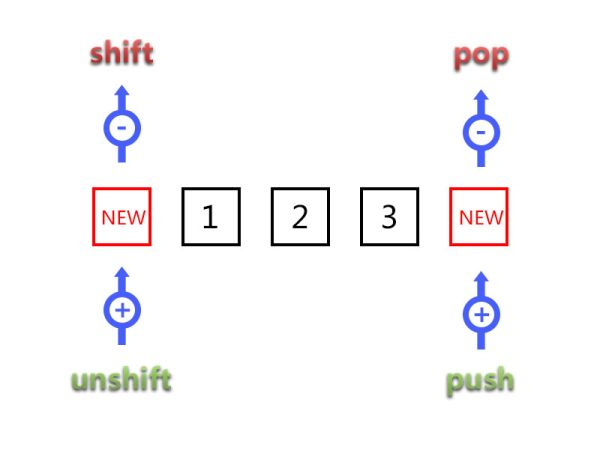
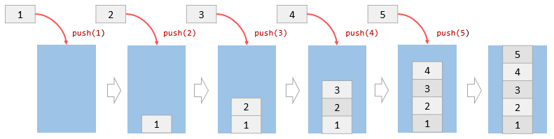
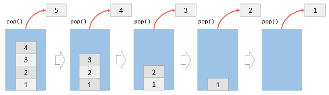
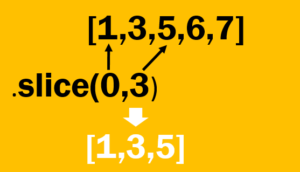
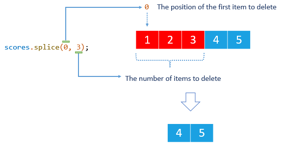
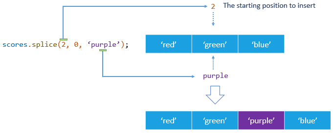
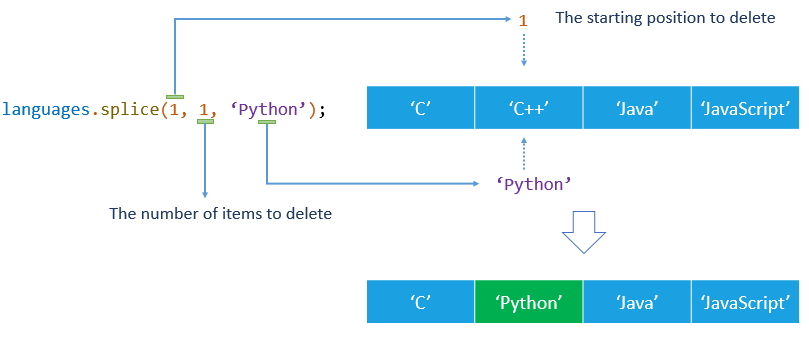

1. Методи split() і join()
split(s) — дозволяє перетворити рядок в масив, розбивши її по розподілу s.
Це не метод масиву, але розглядаємо ми його зараз так, як раніше про масиви не знали.
join(s) — робить в точності протилежне split. Він бере масив і склеює його в рядок, використовуючи s як роздільник.
// split
const message = 'Welcome to Bahamas!';
// Розбиває рядок по розмежовувачу, в такому випадку це пробіл
console.log(message.split(' ')); // ["Welcome", "to", "Bahamas!"]
// Виклик split з нового рядка розіб'є по буквах
console.log(message.split('')); // [багато букв :)]
// join
const clients = ['Mango', 'Poly', 'Ajax'];
// Зшиє всі елементи масиву в рядок,
// між кожною парою елементів буде вказаний роздільник
console.log(clients.join(' ')); // "Mango Poly Ajax"
console.log(clients.join(',')); // "Mango,Poly,Ajax"
console.log(clients.join('-')); // "Mango-Poly-Ajax"
2. Методи indexOf() і includes()
array.indexOf(x) — повертає перший індекс, в якому елемент x був знайдений в масиві, або число -1, якщо такого елемента немає. Використовуйте indexOf
тоді, коли необхідно отримати безпосередньо індекс елемента.
const clients = ['Mango', 'Ajax', 'Poly', 'Kiwi'];
console.log(clients.indexOf('Poly')); // 2
console.log(clients.indexOf('Monkong')); // -1
array.includes(x) — визначає, чи містить масив деякий елемент x,
повертаючи true або false відповідно. Використовуйте includes тоді, коли необхідно перевірити, чи є елемент в масиві і не важливий його порядковий номер.
const clients = ['Mango', 'Ajax', 'Poly', 'Kiwi'];
console.log(clients.includes('Poly')); // true
console.log(clients.includes('Monkong')); // false
2.1. Перевірка множинних умов з includes()
На перший погляд приклад нижче виглядає цілком добре. Однак, що якщо у нас буде більше червоних фруктів, наприклад ще вишня (cherry) або журавлина (cranberries)? Чи будемо ми розширювати умову за допомогою додаткових ||?
const fruit = 'apple';
if (fruit === 'apple' || fruit === 'strawberry') {
console.log('It is a red fruit!');
}
Можемо переписати умову, з використанням Array.includes, це дуже просто і масштабовано.
// Виносимо варіанти в масив
const redFruits = ['apple', 'strawberry', 'cherry', 'cranberries'];
const fruit = 'cherry';
if (redFruits.includes(fruit)) {
сonsole.log('It is a red fruit!');
}
3. Методи push(), pop(), shift(), unshift()
Додають або видаляють крайні елементи масиву. Працюють тільки з крайнім лівим і крайнім правим елементом масиву, і не можуть поставити або видалити елемент з довільної позиції. Для наочності погляньте на ілюстрацію нижче.

3.1. push і pop
push() — дозволяє додати один або кілька елементів в кінець масиву. Метод повертає значення властивості length, яке визначає кількість елементів в масиві.

pop() — видаляє елемент з кінця масиву і повертає видалений елемент. Якщо масив порожній, метод повертає undefined.

У прикладі кодом описані ілюстрації вище, перші 3 кроки. Створюється порожній масив з ім'ям stack і в кінець масиву додається три числа, одне за іншим використовуючи push(), потім вони видаляються використовуючи pop().
// Створюємо порожній масив
const stack = [];
// подаємо елементи в кінець масиву
stack.push(1);
console.log(stack); // [1]
stack.push(2);
console.log(stack); // [1, 2]
stack.push(3);
console.log(stack); // [1, 2, 3]
// Видаляємо елементи з кінця масиву
console.log(stack.pop()); // 3
console.log(stack); // [1, 2]
console.log(stack.pop()); // 2
console.log(stack); // [1]
console.log(stack.pop()); // 1
console.log(stack); // []
console.log(stack.pop()); // undefined
3.2. shift() і unshift()
Рідше використовуються методи shift і unshift.
shift()— видаляє елемент з початку масиву і повертає його (елемента) значення.unshift()— додає елемент в початок масиву.
const clients = ['Mango', 'Ajax', 'Poly'];
console.log(clients.shift()); // Mango
console.log(clients); // ["Ajax", "Poly"]
clients.unshift('Kiwi');
console.log(clients); // ["Kiwi", "Ajax", "Poly"]
4. Метод slice()
Синтаксис метода slice() однаковий для рядків і масивів. Його просто запам'ятати. Він дозволяє отримувати елементи підмножини масиву і додавати їх в новий масив. У більшості випадків використовується для створення копії частини або цілого вихідного масиву.
slice(begin, end)
Копіює елементи від begin, до, але не ключа, end.

- Обидва аргументи (
beginіend) не обов'язкові. - Параметр
beginвизначає індекс, з якого слід починати витяг. - Параметр
end, визначає індекс елемента, на якому слід закінчити витяг. Методsliceне включає елемент з індексомendу витягнуті елементи. - Якщо
beginіendне вказані, копіювання буде з початку масиву, з індексу0, - тобто скопіюється весь масив. - Якщо не вказати параметр
end, методsliceбуде використовувати довжину масиву (length) для параметраend. - Метод
sliceне змінює вихідний масив, а повертає новий масив, що містить копію елементів вихідного. - Можна використовувати негативні індекси, вони рахуються з кінця.
const clients = ['Mango', 'Ajax', 'Poly', 'Kiwi'];
// Поверне новий масив в якому будуть елементи з індексами від 1 до 2
console.log(clients.slice(1, 3)); // ["Ajax", "Poly"]
// Поверне новий масив в якому будуть
// елементи з індексами від 1 до (clients.length - 1)
console.log(clients.slice(1)); // ["Ajax", "Poly", "Kiwi"]
// Поверне копію вихідного масиву
console.log(clients.slice()); // ["Mango", Ajax", "Poly", "Kiwi"]
// Поверне новий масив складаються з останніх двох елементом вихідного
console.log(clients.slice(-2)); // ["Poly", "Kiwi"]
5. Метод splice()
splice() — швейцарський ніж для роботи з масивами, в тому випадку, якщо вихідний масив необхідно змінити. Дозволяє видаляти, додавати і замінювати елементи в довільному місці масиву.
5.1. Видалення елементів масиву
Щоб видалити елементи в масиві, передаються два аргументи.
splice(position, num)
position— вказує позицію (індекс) першого елемента для видаленняnum— визначає кількість видаляються елементів
Метод splice змінює вихідний масив і повертає масив, що містить видалені елементи.
// Припустимо, у нас є масив оцінок, який містить п'ять чисел від 1 до 5.
const scores = [1, 2, 3, 4, 5];
// Наступна операція видаляє три елементи масиву,
// починаючи з першого елемента (індекс 0).
const deletedScores = scores.splice(0, 3);
// Тепер масив scores містить два елементи.
console.log(scores); // [4, 5]
// А масив deletedScores містить три віддалених елементів.
console.log(deletedScores); // [1, 2, 3]
На малюнку показаний виклик методу score.splice(0, 3) з прикладу вище.

5.2. Додавання елементів в масив
Ви можете вставити один або декілька елементів в масив, передавши три або більше аргументу методу splice, при цьому другий аргумент повинен бути рівний нулю.
splice(position, 0, new_element_1, new_element_2, ...)
- Аргумент
positionвказує початкову позицію в масиві, в якій будуть вставлені нові елементи. - Другий аргумент дорівнює нулю
0, він говорить методу не видаляти будь-які елементи. - Третій, четвертий і всі наступні аргументи - це нові елементи, які вставляються в масив.
Зверніть увагу, що метод splice змінює вихідний масив. Крім того, він не видаляє будь-які елементи, тому в цьому випадку повертається порожній масив.
// Припустимо, що у вас є масив з назвами квітів у вигляді рядків.
const colors = ['red', 'green', 'blue'];
// Наступна операція поміщає один новий елемент перед другим елементом.
colors.splice(2, 0, 'purple');
// Тепер масив квітів містить чотири елементи
// з новим елементом, вставленим в другу позицію.
console.log(colors); // ["red", "green", "purple", "blue"]
// Ви можете вставити більше одного елемента, передавши четвертий, п'ятий аргумент і т. д.
colors.splice(1, 0, 'yellow', 'pink');
На малюнку показаний виклик методу colors.splice(2, 0, 'purple') з прикладу вище.

5.3. Заміна елементів масиву
Метод splice() також дозволяє вставити нові елементи в масив при одночасному видаленні існуючих елементів.
Для цього необхідно передати принаймні три аргументи: другим - кількість елементів для видалення, а третім - елементи для вставки. Кількість видалених і додаються елементів може не збігатися.
// Припустимо, у вас є масив мов програмування з чотирьох елементів.
const languages = ['C', 'C++', 'Java', 'JavaScript'];
// Наступна операція замінює другий елемент на новий.
languages.splice(1, 1, 'Python');
// У масиві мов тепер все ще чотири елементи,
// але другий елемент тепер «Python» замість «C++».
console.log(languages); // ["C", "Python", "Java", "JavaScript"]
// Ви можете замінити один елемент на кілька елементів,
// передавши більше аргументів
languages.splice(2, 1, 'C#', 'Swift', 'Go');
console.log(languages);
// ["C", "Python", "C#", "Swift", "Go", "JavaScript"]
На малюнку показаний виклик методу languages.splice(1, 1, 'Python') з прикладу вище.

6. Метод concat()
Використовується для об'єднання двох або більше масивів. Цей метод не змінює вихідний масив, а повертає новий.
const oldClients = ['Mango', 'Ajax', 'Poly', 'Kiwi'];
const newClients = ['Monkong', 'Singu'];
const allClients = oldClients.concat(newClients);
console.log(allClients);
// ["Mango", "Ajax", "Poly", "Kiwi", "Monkong", "Singu"]
console.log(oldClients);
// ["Mango", "Ajax", "Poly", "Kiwi"]
console.log(newClients);
// ["Monkong", "Singu"]